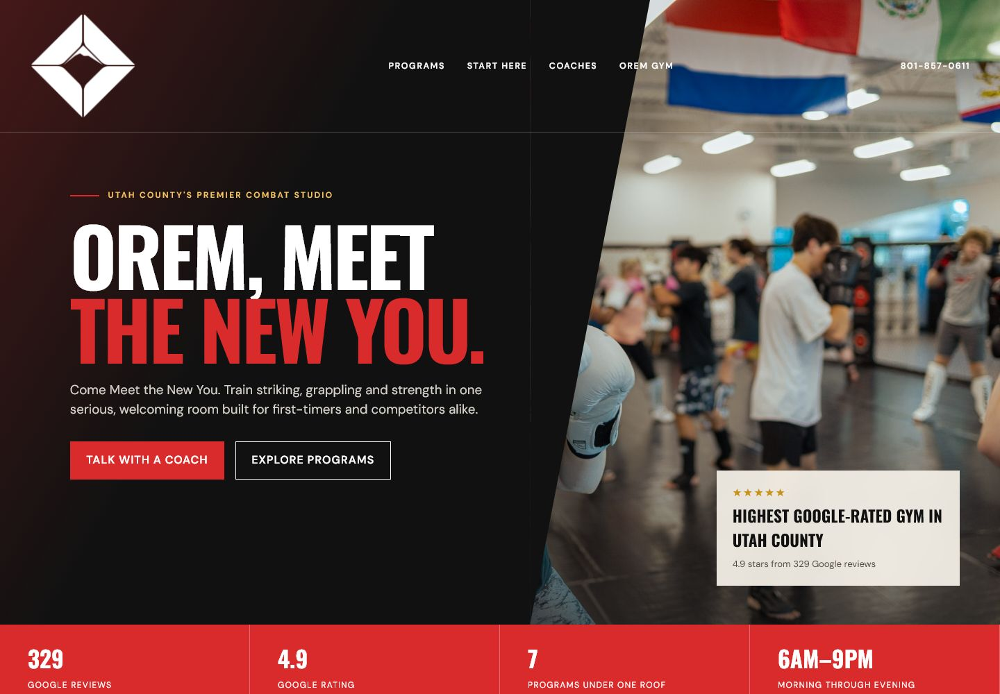
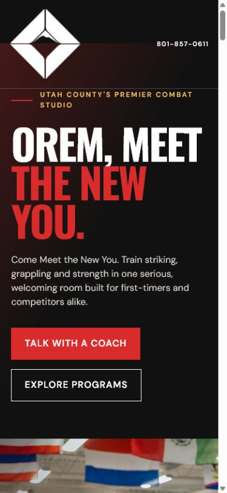

Concept 01Cinematic editorial
The Mountain Is Earned
A dramatic athlete portrait and diagonal poster composition turn the homepage into a fight-film opening. Trust arrives before the program reveal.
Open full concept